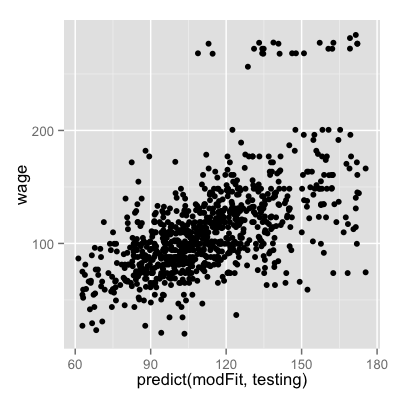

- Take lots of (possibly) weak predictors
- Weight them and add them up
- Get a stronger predictor
Boosting
Jeffrey Leek
Johns Hopkins Bloomberg School of Public Health
Basic idea
Basic idea behind boosting
- Start with a set of classifiers \(h_1,\ldots,h_k\)
- Examples: All possible trees, all possible regression models, all possible cutoffs.
- Create a classifier that combines classification functions:
\(f(x) = \rm{sgn}\left(\sum_{t=1}^T \alpha_t h_t(x)\right)\).
- Goal is to minimize error (on training set)
- Iterative, select one \(h\) at each step
- Calculate weights based on errors
- Upweight missed classifications and select next \(h\)
http://webee.technion.ac.il/people/rmeir/BoostingTutorial.pdf
Simple example

http://webee.technion.ac.il/people/rmeir/BoostingTutorial.pdf
Round 1: adaboost

http://webee.technion.ac.il/people/rmeir/BoostingTutorial.pdf
Round 2 & 3

http://webee.technion.ac.il/people/rmeir/BoostingTutorial.pdf
Completed classifier

http://webee.technion.ac.il/people/rmeir/BoostingTutorial.pdf
Boosting in R
- Boosting can be used with any subset of classifiers
- One large subclass is gradient boosting
- R has multiple boosting libraries. Differences include the choice of basic classification functions and combination rules.
- gbm - boosting with trees.
- mboost - model based boosting
- ada - statistical boosting based on additive logistic regression
- gamBoost for boosting generalized additive models
- Most of these are available in the caret package
Wage example
library(ISLR); data(Wage); library(ggplot2); library(caret);
Wage <- subset(Wage,select=-c(logwage))
inTrain <- createDataPartition(y=Wage$wage,
p=0.7, list=FALSE)
training <- Wage[inTrain,]; testing <- Wage[-inTrain,]
Fit the model
modFit <- train(wage ~ ., method="gbm",data=training,verbose=FALSE)
print(modFit)
2102 samples
10 predictors
No pre-processing
Resampling: Bootstrap (25 reps)
Summary of sample sizes: 2102, 2102, 2102, 2102, 2102, 2102, ...
Resampling results across tuning parameters:
interaction.depth n.trees RMSE Rsquared RMSE SD Rsquared SD
1 50 30 0.3 1 0.02
1 100 30 0.3 1 0.02
1 200 30 0.3 1 0.02
2 50 30 0.3 1 0.02
2 100 30 0.3 1 0.02
2 200 30 0.3 1 0.02
3 50 30 0.3 1 0.02
3 100 30 0.3 1 0.02
3 200 30 0.3 1 0.02
Tuning parameter 'shrinkage' was held constant at a value of 0.1
RMSE was used to select the optimal model using the smallest value.
The final values used for the model were interaction.depth = 2, n.trees = 100 and shrinkage = 0.1.
Plot the results
qplot(predict(modFit,testing),wage,data=testing)

Notes and further reading
- A couple of nice tutorials for boosting
- Freund and Shapire - http://www.cc.gatech.edu/~thad/6601-gradAI-fall2013/boosting.pdf
- Ron Meir- http://webee.technion.ac.il/people/rmeir/BoostingTutorial.pdf
- Boosting, random forests, and model ensembling are the most common tools that win Kaggle and other prediction contests.